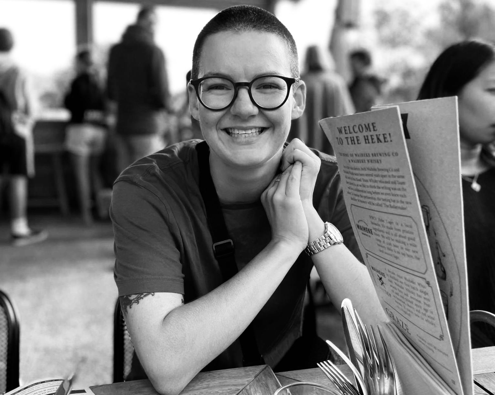

I'm a software developer with a love of human interaction based in Auckland, New Zealand. I have a background in stage lighting and audio-reactive visuals, and I suffer from a chronic fascination by the intersection between art and technology. I also have a curiosity for using the malleability of web design to present information in ways previously impossible - I find the idea of infinite zooming, controlling the speed and direction of playback, and the possibilities reveal by live feeds endlessly inspiring.
